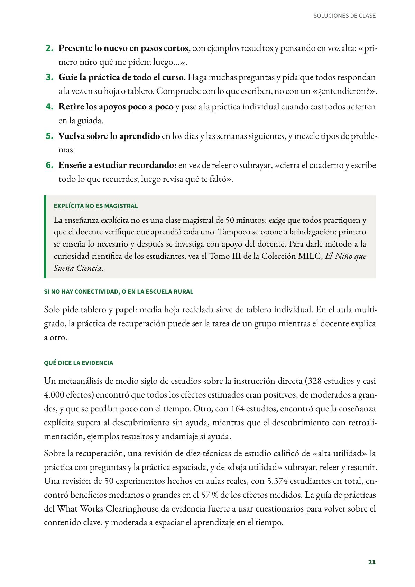
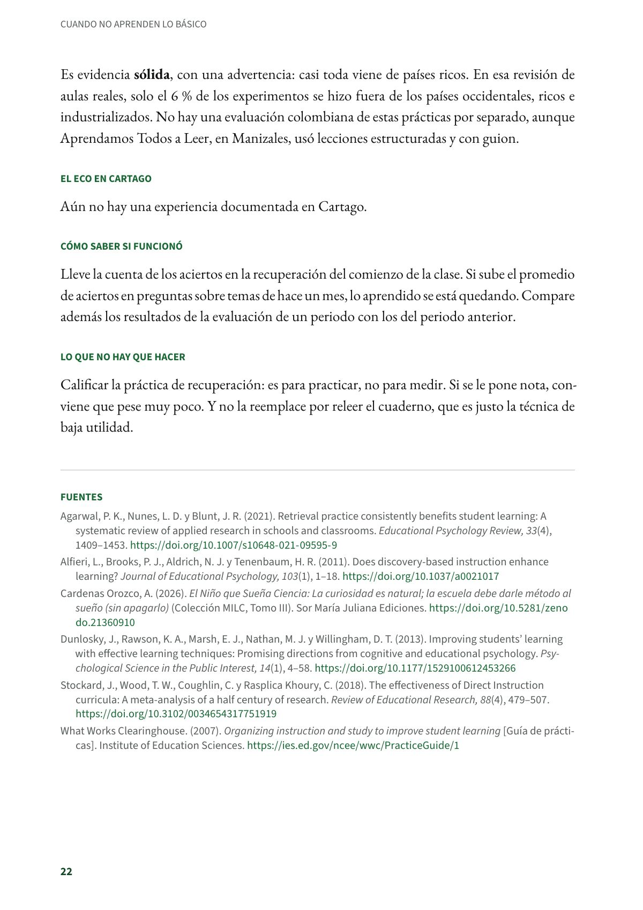

Mostrar, practicar juntos y recordar: enseñanza explícita con práctica de recuperación
Dos prácticas que se refuerzan. Todos los grados y todas las áreas. Evidencia sólida.
PDF · 4 págs. · 88 KBEn resumen
- Evidencia: sólida.
- Para quién: Todos los grados y todas las áreas.
- Tiempo: Es la estructura de cada clase. La práctica de recuperación ocupa unos cinco minutos al comienzo.
- Materiales: Tablero y hojas o tableros pequeños para que todos respondan a la vez.
- De dónde viene: Estados Unidos: la investigación sobre la instrucción directa y la psicología cognitiva del aprendizaje.
Qué es
Dos prácticas que se refuerzan. La enseñanza explícita sigue una secuencia: «yo lo hago, lo hacemos juntos, lo haces tú». El docente muestra paso a paso, guía la práctica de todo el curso y retira los apoyos cuando el estudiante ya puede solo. La práctica de recuperación hace que el estudiante traiga de memoria, sin mirar el cuaderno, lo que aprendió días o semanas antes. Recordar así fija lo aprendido mejor que volver a leerlo.
Paso a paso en el aula
- Empiece con recuperación. Haga tres a cinco preguntas, sin cuaderno, sobre la clase anterior, la semana pasada y el mes pasado. Todos responden por escrito y luego revisan con la respuesta correcta. No ponga nota.
- Presente lo nuevo en pasos cortos, con ejemplos resueltos y pensando en voz alta: «primero miro qué me piden; luego…».
- Guíe la práctica de todo el curso. Haga muchas preguntas y pida que todos respondan a la vez en su hoja o tablero. Compruebe con lo que escriben, no con un «¿entendieron?».
- Retire los apoyos poco a poco y pase a la práctica individual cuando casi todos acierten en la guiada.
- Vuelva sobre lo aprendido en los días y las semanas siguientes, y mezcle tipos de problemas.
- Enseñe a estudiar recordando: en vez de releer o subrayar, «cierra el cuaderno y escribe todo lo que recuerdes; luego revisa qué te faltó».
Explícita no es magistral
La enseñanza explícita no es una clase magistral de 50 minutos: exige que todos practiquen y que el docente verifique qué aprendió cada uno. Tampoco se opone a la indagación: primero se enseña lo necesario y después se investiga con apoyo del docente. Para darle método a la curiosidad científica de los estudiantes, vea el Tomo III de la Colección MILC, El Niño que Sueña Ciencia.
Si no hay conectividad, o en la escuela rural
Solo pide tablero y papel: media hoja reciclada sirve de tablero individual. En el aula multigrado, la práctica de recuperación puede ser la tarea de un grupo mientras el docente explica a otro.
Qué dice la evidencia
Un metaanálisis de medio siglo de estudios sobre la instrucción directa (328 estudios y casi 4.000 efectos) encontró que todos los efectos estimados eran positivos, de moderados a grandes, y que se perdían poco con el tiempo. Otro, con 164 estudios, encontró que la enseñanza explícita supera al descubrimiento sin ayuda, mientras que el descubrimiento con retroalimentación, ejemplos resueltos y andamiaje sí ayuda.
Sobre la recuperación, una revisión de diez técnicas de estudio calificó de «alta utilidad» la práctica con preguntas y la práctica espaciada, y de «baja utilidad» subrayar, releer y resumir. Una revisión de 50 experimentos hechos en aulas reales, con 5.374 estudiantes en total, encontró beneficios medianos o grandes en el 57 % de los efectos medidos. La guía de prácticas del What Works Clearinghouse da evidencia fuerte a usar cuestionarios para volver sobre el contenido clave, y moderada a espaciar el aprendizaje en el tiempo.
Es evidencia sólida, con una advertencia: casi toda viene de países ricos. En esa revisión de aulas reales, solo el 6 % de los experimentos se hizo fuera de los países occidentales, ricos e industrializados. No hay una evaluación colombiana de estas prácticas por separado, aunque Aprendamos Todos a Leer, en Manizales, usó lecciones estructuradas y con guion.
El eco en Cartago
Aún no hay una experiencia documentada en Cartago.
Cómo saber si funcionó
Lleve la cuenta de los aciertos en la recuperación del comienzo de la clase. Si sube el promedio de aciertos en preguntas sobre temas de hace un mes, lo aprendido se está quedando. Compare además los resultados de la evaluación de un periodo con los del periodo anterior.
Lo que no hay que hacer
Calificar la práctica de recuperación: es para practicar, no para medir. Si se le pone nota, conviene que pese muy poco. Y no la reemplace por releer el cuaderno, que es justo la técnica de baja utilidad.
Fuentes
Agarwal, P. K., Nunes, L. D. y Blunt, J. R. (2021). Retrieval practice consistently benefits student learning: A systematic review of applied research in schools and classrooms. Educational Psychology Review, 33(4), 1409–1453. doi.org
Alfieri, L., Brooks, P. J., Aldrich, N. J. y Tenenbaum, H. R. (2011). Does discovery-based instruction enhance learning? Journal of Educational Psychology, 103(1), 1–18. doi.org
Cardenas Orozco, A. (2026). El Niño que Sueña Ciencia: La curiosidad es natural; la escuela debe darle método al sueño (sin apagarlo) (Colección MILC, Tomo III). Sor María Juliana Ediciones. doi.org
Dunlosky, J., Rawson, K. A., Marsh, E. J., Nathan, M. J. y Willingham, D. T. (2013). Improving students’ learning with effective learning techniques: Promising directions from cognitive and educational psychology. Psychological Science in the Public Interest, 14(1), 4–58. doi.org
Stockard, J., Wood, T. W., Coughlin, C. y Rasplica Khoury, C. (2018). The effectiveness of Direct Instruction curricula: A meta-analysis of a half century of research. Review of Educational Research, 88(4), 479–507. doi.org
What Works Clearinghouse. (2007). Organizing instruction and study to improve student learning [Guía de prácticas]. Institute of Education Sciences. ies.ed.gov
Así se ve en el libro
4 páginas

